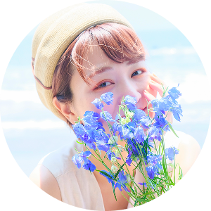

かわしま えりな
〜 デザインに物語を 〜
幼少期から演劇に携わってきた経験から、
表現の中に物語があるものや、人の心を動かすことに魅力を感じてきました。
シンプルで分かりやすい中にも楽しさがあり、
思わず先を見たくなるデザインを目指して勉強しています。
Adobe Photoshop
の基本操作
デザインカンプ、
バナーの作成
Adobe Illustrator
の基本操作
ロゴデザイン
HTML、CSS、
Javascript の基礎
Webサイトの作成
Adobe Premiere Pro
の基本操作
動画編集
Figma の基本操作
デザインカンプの作成
【CM】
- エバラ「茹でたお肉と野菜のサラダ」(2000年)
- SONY PS 「ガチャろく」(2002年)
- TOMY 「evio」(2003年)
- ニッスイ「お弁当に便利」(2003年)
- 東芝「東芝HDD＆DVD」(2004年)
- タカラ「きぐるみキグミー」(2005年)
- 大塚製薬「SOY JOY ～女優と社長編」(2008年)
【TV】
- TBS 愛の劇場「新・天までとどけ2」(2001年)
- WOWOW 「Nail」(2001年)
- CX 「非婚家族」(2001年)
- CX「発掘あるある大辞典」再現VR(2001年)
- テレビ朝日 土曜ワイド劇場「終着駅シリーズ」(2006年)
- 地方局「ケータイ少女～恋の課外授業」(2007年)
【映画】
- 近代映画協会「折り梅」(2002年)
- Netflix全裸監督シーズン2 第3話
【舞台】
- 座☆風流堂公演「流刃直線事件帳」長屋の子供役 (2002年)
- 劇団空感演人プロデュース@両国エアースタジオ
「解体OK」宮川友紀役 (2014年6月)
「WALKING IN THE SKY」大森真智子役 (2014年10月)
「Juliet」村井恵美役、芹沢彩役(2015年6月)
「海ゆかば」石垣ルリ役(2015年11月)
「カスタマイズ」藤村美帆役(2015年11月)
「六畳一間で愛してる」坂井沙織里役(2016年6月)
- M's企画第7回公演「Q＆A」@阿佐ヶ谷シアターシャイン(2016年10月)
- 青色有線第3回公演「デザート・ベイベー」@阿佐ヶ谷シアターシャイン(2017年2月)
- team365歩 第3歩「カゲノムコウ」@上野ストアハウス(2017年6月)
- 青色有線第4回公演「甘い文句」@浅草九劇(2017年8月）
- 白井ラテONE公演「泳いで。」@プライムシアター中野新橋(2017年10月)
- 青色有線第5回本公演「私信/来信、ユートピア」劇中歌作詞、作曲、ギター弾き語り、出演 @シアター風姿花伝(2018年2月)
- 劇団空感演人10周年記念公演「黄昏VR～想い出は霧の中へ～」@新宿シアターサンモール(2018年5月)
- 青色有線第6回本公演「長く澄んだ夜」@下北沢シアター711(2018年8月)
- 青色遊船まもなく出航 No.1「迷路みたい」@花まる学習会王子小劇場(2019年1月)
- エリィジャパン第１回戦『ガールズトーク』@下北沢 music bar Mumric Murphy(2019年5月)
- 青色遊船オムニバス短編集「天国で逢いましょう」@兎亭 (2020年12月)
- 実験的演劇パフォーマンス「THE ONE TABLE SHOW」@ミカン下北(2022年12月)
【雑誌・Web・その他】
- Webスチール ビューティーナビ
- 雑誌「ネイルUP」
- フリーペーパー「めざましマガジン」
- Beeミュージックスクールコンセプトムービー
- Webマガジン「ムジンプレス」にてインタビュー記事【夢人図鑑Vol.5】に掲載中
- 「アートにエールを！」参加作品「子どものための戯曲 にゃんのため」声の出演(2020年9月)
…その他、業界専門紙、サロンモデルなど多数出演